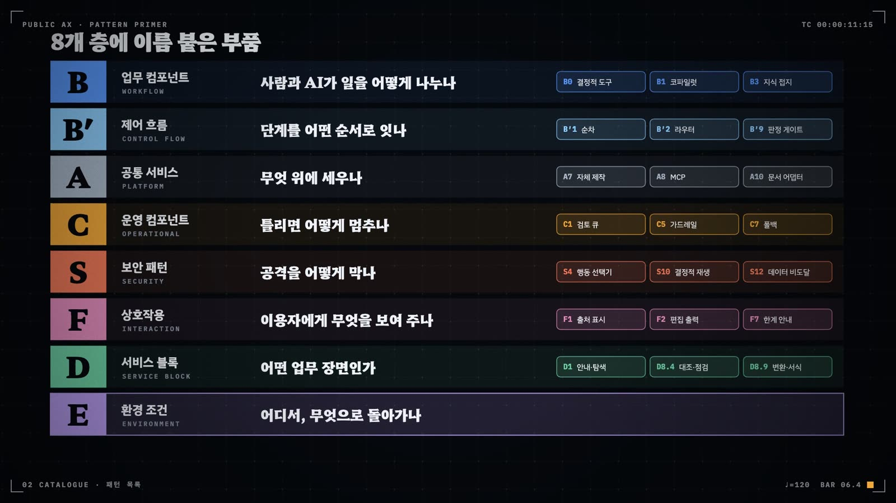

카탈로그의 구조
카탈로그는 과제 하나를 여덟 계층의 부품과 한 줄의 패턴 서명으로 읽는다. 읽는 법은 계층의 경계, 주 부품을 고르는 가치 흐름 규칙, 구현 상태 세 단계, 환경 조건 다섯 축, 서비스 유형 체계가 정한다.
- 여덟 계층(A·B·B′·C·S·F·D·E)이 각각 무엇을 맡는지 구분한다
- 패턴 서명 공식을 읽고 과제 하나를 서명으로 적는다
- 가치 흐름 규칙(R1)으로 주 부품을 하나만 고른다
- present·implemented·planned를 증거 기준으로 가른다
- 환경 조건이 필수 의존 부품을 어떻게 바꾸는지 매트릭스로 확인한다
- 서비스 유형과 유형별 필수 부품으로 빠진 부품을 찾는다
어느 기관의 AI 과제 목록을 펼치면 "RAG 챗봇", "생성형 AI 민원 지원", "업무 에이전트" 같은 이름이 나란히 적혀 있다. 이름만 보고는 셋 가운데 어느 것이 사람의 확인을 거치고 어느 것이 업무 시스템에 직접 쓰는지 알 길이 없다. 카탈로그 v0.7.1은 과제를 여덟 계층의 부품으로 나눠 읽어 그 차이를 드러낸다. 패턴 디렉터리에는 107개 항목이 있다. 부품과 서비스 블록 91개가 E를 뺀 일곱 계층에 나뉘고, 나머지 16개는 안티패턴이다. 환경 조건 E는 항목 대신 다섯 축의 어휘로 적는다.
계층은 기술 종류로 나누지 않는다. 사람과 AI가 일을 어떻게 나누는지, 그 분담이 어떤 기반에 기대는지, 무엇이 실수와 공격을 막는지, 이용자가 무엇을 보고 만지는지를 계층마다 따로 묻는다. 카탈로그는 이것을 한 문장으로 정의한다. 패턴은 여러 기관이 재사용하는 부품이고, 과제는 그 부품들을 특정 환경 조건 아래 조립한 배선도(wiring diagram)다.
4.1 여덟 계층
카탈로그의 뼈대는 GoF의 세 범주에서 왔다. 생성(Creational) 범주가 공통 서비스 A로, 구조(Structural) 범주가 업무 컴포넌트 B로, 행위(Behavioral) 범주가 운영 컴포넌트 C로 옮겨졌다. 아래층은 위층이 의존하는 기반이고, 위층으로 갈수록 업무에 가깝다. v0.3은 여기에 부품과 독립된 환경 조건 계층 E를 더했다. v0.4는 제어 흐름 원형 B′와 상호작용 계층 F를, v0.5는 보안 계층 S를 보탰다. 서비스 블록 D는 부품으로 세지 않고 조립도를 읽는 렌즈로 쓴다.

그림 4.1은 여덟 계층이 한 과제 안에서 맞물리는 자리를 보여 준다. 가운데에 업무 컴포넌트 B가 있고 그 안에 배선을 정하는 B′가 들어 있다. B는 아래의 공통 서비스 A에서 데이터·모델·도구를 끌어다 쓰고, 만든 산출물을 위의 상호작용 F를 거쳐 이용자에게 내놓는다. 양옆의 C와 S는 흐름 전체에 걸리는 횡단 부품이다. 산출물이 최종으로 닿는 접점이 D이고, 이 모두를 환경 조건 E가 감싼다.
계층마다 묻는 질문이 다르다(표 4.1). 같은 상용 LLM 호출이라도 사람이 초안을 확정하면 B1 코파일럿이고, 모델이 도구를 계속 부르며 다단계 업무를 이어 가면 B6 오케스트레이터다. 카탈로그는 기술명(RAG·에이전트·MCP) 대신 분담의 모양으로 부품을 가른다. 그래서 서로 다른 기술로 만든 과제가 같은 부품으로 묶이고, 같은 기술을 쓴 과제가 다른 부품으로 갈린다.
| 계층 | 영문·성격 | 묻는 질문 | 태깅 방식 | 항목 |
|---|---|---|---|---|
| A 공통 서비스 | Platform · Creational | 업무 컴포넌트가 무엇에 기대는가 | 여러 개. Provider로 한 번 두고 공유 | 19 |
| B 업무 컴포넌트 | Workflow · Structural | 사람과 AI가 일을 어떻게 나누는가 | 주 부품 1개, 나머지는 secondary | 9 |
| B′ 제어 흐름 원형 | Control flow | 주 부품 안에서 단계가 어떻게 이어지는가 | 해당하는 것 모두(0~n) | 11 |
| C 운영 컴포넌트 | Operation · Behavioral | 실수와 장애를 무엇이 잡는가 | 구현 상태 3단계로 | 10 |
| S 보안 패턴 | Security | 공격자가 있다면 무엇이 막는가 | 구현·설계가 명시된 것만, 3단계 | 13 |
| F 상호작용 패턴 | Interaction | 이용자가 통제를 어디서 보고 만지는가 | 화면·기능으로 명시된 것만 | 11 |
| D 서비스 블록 | Touchpoint · 렌즈 | 산출물이 어느 공공서비스 접점에 닿는가 | 1~2개 | 18 |
| E 환경 조건 | Environment | 어떤 망·모델·실행 형태·권한·등급 아래인가 | 다섯 축 모두 기록, 모르면 미확인 | 5축 |
세 부품 계층은 AX 성숙도의 관문과도 맞물린다. 공통 서비스는 Ready 관문, 업무 컴포넌트는 Enabled 관문, 운영 컴포넌트는 First·Native 관문에 대응한다. 기반 부품이 없는 기관은 Ready 관문 앞에서 멈춘다. 업무 분담이 정해져야 AI가 실제 업무 흐름에 들어가고, 운영 부품이 붙은 뒤에야 그 흐름이 상시 업무로 남는다.
C와 S는 모두 횡단 부품이지만 상대가 다르다. C는 실수와 장애를, S는 공격을 다룬다. C1검토 큐는 성실한 모델의 오답을 잡고, S4행동 선택기는 악의적인 입력이 결과적 행동을 촉발하지 못하게 한다. F는 C의 통제를 이용자 쪽에서 보이게 하는 면이다. 대민 서비스에서 신뢰는 화면에 보이는 F1출처 표시와 F7한계·신뢰도 안내에서 생긴다.
4.2 패턴 서명
과제 하나를 카탈로그로 적으면 한 줄의 패턴 서명(pattern signature)이 나온다. 서명은 계층별로 몇 개를 어떤 방식으로 적는지를 정한 공식이다(그림 4.2).
B 주 부품 1 + B′ 0~n + A 0~n + C(상태) + S(상태) + F 0~n + D 1~2 + E 5축 + 서비스 유형 1
공식의 각 항은 태깅 스키마의 필드 하나와 대응한다. B는 workflow.primary와 secondary, B′는 control_flow, A는 platform, C와 S는 operational·security 아래 present·implemented·planned 목록, F는 interaction, D는 blocks, E는 environment, 서비스 유형은 service_type에 들어간다. 여기에 부품 사이의 연결을 A1→B1 같은 화살표 목록(wiring)으로 적으면 서명이 조립도가 된다.
서명을 적는 순서와 조립하는 순서는 다르다. 태깅할 때는 B 주 부품부터 정하고, 서비스 유형을 붙인 뒤, 유형별 필수 부품과 대조해 빠진 것을 확인한다. 설계할 때는 반대로 D와 E부터 못 박는다(12장). 태깅하는 사람은 공식으로 과제를 진단하고, 설계하는 사람은 같은 공식을 빈칸 채우기 양식으로 쓴다.
4.3 주 부품은 하나: 가치 흐름 규칙
B 계층만 주 부품을 하나로 제한한다. 한 과제 안에 RAG도 있고 에이전트도 있고 비전 모델도 있는 경우가 흔하기 때문이다. v0.5까지는 우선순위표(B6 → B3 → B5 → B4 → B8 → B7 → B2 → B1 → B0)에서 먼저 만족하는 부품을 주 부품으로 삼았다. 태깅 피드백에서 이 표가 실제 역할 분담과 어긋난다는 지적이 이어졌다. v0.6은 판정의 중심을 가치 흐름으로 옮겼다.
그림 4.3은 R1을 판정 순서로 옮긴 것이다. 첫 질문은 언제나 산출물이다. 담당자가 받는 것이 수정할 초안인가, 경보인가, 점수와 순위인가, 답변인가. 그 산출물을 만드는 부품이 뚜렷하면 그것이 후보다. 후보가 B6일 때는 요건을 한 번 더 확인한다(R2). 복수의 LLM 역할, 도구 호출 루프, AI가 계획과 도구를 스스로 고르는 구조가 모두 있어야 B6이다. 순서가 고정된 파이프라인은 B′1 순차 파이프라인을 가진 B1이나 B4이고, 스케줄러나 크롤러 수준의 자동화는 에이전트라고 불러도 B6이 아니다.
R1 아래서 자주 헷갈리는 경우는 세 가지다. 비전 모델로 탐지하고 LLM으로 리포트를 쓰는 과제는 경보가 핵심 산출물이므로 B5 현장 감지·경보다. OCR로 서류를 읽은 뒤 RAG로 상담하는 과제는 답변이 산출물이므로 B3 지식 접지 상담이다. 에이전트 프레임워크를 썼더라도 실제 업무 흐름이 "초안 → 사람 확정"이면 B1 코파일럿이다. 판정은 agent_system 같은 기술 필드보다 원문에 적힌 실제 역할 분담을 따른다.
4.4 구현 상태 세 단계
A와 B는 있는지 없는지만 적으면 된다. C·S·F는 다르다. 보고서에 "검토 절차를 둔다"고 적혀 있어도 그 절차가 실제로 돌아갔는지는 별개다. v0.5는 present와 planned 두 단계만 두었고, C6·C7의 present 판정을 AX 성숙도 하위점수와 연동했다. 그 결과 설계 서술만 있는 과제가 present로 잡혔고, 태깅 피드백에서 충돌 보고가 잇따랐다. v0.6은 모든 계층에 공통으로 세 단계를 두었다(R3, 그림 4.4).
세 단계를 엄격하게 가르는 이유는 서명이 쓰이는 곳에 있다. 서명은 재사용 부품을 찾는 레지스트리의 입력이다. 설계만 있는 폴백 스위치를 present로 적으면 다른 기관이 그 과제를 참조 구현으로 가져갔다가 빈 상자를 받는다. 이런 일이 한 번 생기면 그다음부터는 누구도 참조 구현 표시를 믿지 않는다. v0.7.1의 R17은 같은 원칙을 F 계층에도 적용해 interaction.planned를 쓰도록 했다.
4.5 환경 조건 E: 다섯 축
같은 부품이라도 어디서 돌아가느냐에 따라 함께 끼워야 할 부품이 달라진다. 폐쇄망의 지식 접지 상담과 인터넷망의 지식 접지 상담은 같은 B3이지만 의존하는 모델 서빙이 다르다. 환경 조건은 이 차이를 기록하는 계층이다. 부품 목록에는 들어가지 않고 조립도의 전제로 적으며, 모든 과제가 다섯 축 모두에 답한다. 어휘는 PAX 스키마를 그대로 채택했으므로 PAX 사례와 새로 설계하는 서비스가 같은 값으로 적힌다.
- E1 배포망: 인터넷망 / 행정망 / 폐쇄망 / 로컬 PC / 클라우드(CSAP) / 혼합. 실행 요건은 로컬 완결 / 폐쇄망 가능 / 인터넷 필수.
- E2 모델 의존: 해외 상용 API / 해외 오픈웨이트(로컬) / 국산 독자모델 / 국산 오픈웨이트 / 혼합 / 모델 중립(BYO) / 없음(비LLM).
- E3 실행 형태: 브라우저만 / 설치 필요 / MCP·CLI 설정 / AI 도구 설정(스킬·플러그인) / 서버 구축.
- E4 권한 범위: P0 읽기 전용 / P1 산출물 생성 / P2 업무 시스템 쓰기 / P3 처분 보조 / P4 자율 처분. v0.6에서 물리 설비 구동을 뜻하는 P2a가 추가되었다.
- E5 데이터 등급: O(공개) / S(민감) / C(기밀). 개인정보·민감정보를 다루면 S 이상이다.
다섯 축 가운데 일부 값은 필수 의존을 바꾼다(그림 4.5). 폐쇄망·행정망이면 모델 서빙이 내부망 프록시나 로컬 모델이어야 한다. 해외 상용 API에 의존하면 비식별과 폴백이 필요하다. 권한이 P2 이상이면 라우터·롤백·로그·권한 경계가 필수가 된다. 데이터 등급은 다른 축의 허용 범위를 정한다. S 이상이면 해외 상용 API를 A2.4내부망 프록시 없이 직접 부를 수 없다.
조건과 주 부품을 교차시키면 조건별 필수 의존 매트릭스가 된다(표 4.2). 칸에 적힌 부품이 빠지면 그 조건에서 조립이 성립하지 않는다. 마지막 두 행은 v0.5와 v0.6이 더한 것이다. 신뢰 불가 입력을 읽으면서 시스템에 쓰는 권한까지 가진 과제는 보안 부품을 반드시 갖춘다.
| 조건 | B3 지식 접지 | B6 오케스트레이터 | B1 코파일럿 | B8 레거시 오버레이 | 공통 |
|---|---|---|---|---|---|
| E1 폐쇄망·행정망 | A2 주권형 또는 내부망 프록시 + 로컬 임베딩 | A8 로컬 MCP 호스트 + A2 로컬 모델 | A2 내부망 프록시 (BYO 코딩 에이전트 불가) | A2 로컬 모델 | C7 경로는 수동 전환·로컬 모델만 |
| E1 로컬 PC 완결 | A6 없이 파일 기반 검색으로 축소 | 드묾 (도구 대상이 로컬 파일뿐) | A9 스킬 + A10 어댑터 | A10 어댑터 (HWP·엑셀 입출력) | C5가 불필요해지는 대신 C4 로그가 사라짐. 기관 전이 시 재장착 |
| E2 해외 상용 API | C5 비식별 전처리 + C7 폴백 | A2 게이트웨이 + C7 + C8 도구별 승인 | A2 게이트웨이 (직접 호출 금지) | C5 (행정망 본문이 외부로 나감) | E5가 S 이상이면 A2 내부망 프록시 필수 |
| E2 모델 중립(BYO) | 해당 없음 | A9 스킬 형태로 배포 | A9 스킬 (모델 교체 가능성이 곧 C7) | 해당 없음 | MIT·Apache 등 라이선스 명시가 전이 조건 |
| E3 MCP·CLI 설정 | A8 서버가 코퍼스를 제공 | A8 + C8 읽기·쓰기 분리 + MCP 6축 검증 | A8 도구를 코파일럿이 호출 | 해당 없음 | A8 레지스트리·버전·갱신 공지 |
| 신뢰 불가 입력 + P2 이상 | S6 문서별 격리 LLM + S2 권한 인식 검색 | S5 계획 후 실행 또는 S6 이중 LLM + S9 샌드박스 | S3 컨텍스트 방화벽 + S8 | S4 행동 선택기 (화면 텍스트는 전부 신뢰 불가) | 신뢰 불가 입력 규칙 · S10 재생 기록 |
| E4 P2 시스템 쓰기 이상 | C2 + C3 + C8 | C2 + C3 + C4 + C8 킬스위치 | C1 전건 검토 → C2 분기 | C3 되돌림 (화면 조작은 원자성 없음) | 무통제 자율성은 위험 신호 |
PAX 557건의 환경 조건은 한쪽으로 크게 기울어 있다. E2는 없음(비LLM)이 296건으로 절반을 넘고, 모델 중립(BYO)이 89건, 해외 상용 API가 64건이다. E4는 P1 산출물 생성 292건, P0 읽기 전용 239건, P2 시스템 쓰기 26건이며 P3 이상은 한 건도 없다. 데이터 등급은 O(공개)가 338건, S(민감)가 109건이고 110건은 원문으로 확인되지 않았다. 공직자가 스스로 만든 도구는 대부분 공개 데이터를 읽거나 산출물을 만드는 범위에 머문다는 뜻이다. 그래서 PAX 사례는 표 4.2의 로컬 PC 완결 행과 모델 중립 행에 자주 걸리고, 마지막 두 행에 걸리는 사례는 드물다. 시스템에 쓰는 서비스를 설계할 때는 참고할 사례가 적으므로 표의 규칙을 먼저 따른다.
4.6 서비스 유형
서비스 유형(service type)은 조합 전체에 붙는 이름이다. 이 과제가 무슨 종류의 서비스인지에 답하고, 유형이 정해지면 필수 부품이 따라 정해진다. v0.5의 유형은 0~9의 열 가지였다. v0.6에서 5를 둘로 나누고 10~12를 신설했으며(R7), v0.7에서 13 비식별·정제 도구를 더하고 필수 부품 일부를 "또는"으로 완화했다(R10·R17). v0.7.1은 한 유형 안의 서로 다른 관점을 하위유형으로 갈랐다(R18~R22). 표 4.3은 현재 검증기가 쓰는 필수 부품과 v0.7·v0.7.1의 완화·분리를 함께 적은 것이다.
| 유형 | 필수 부품 (검증기) | v0.7·v0.7.1 완화·하위유형 | PAX 사례 수 · 자주 빠진 부품(건) |
|---|---|---|---|
| 1 대민 상담·안내 | A2, C5, C9, C7, F1, F7 | 비LLM이면 C7·F7 면제(R7). 규칙 기반 조회 안내는 A2 대신 A1 허용(R21) | 32건 · C9 31, C5 30, A2 27, F1 21 |
| 2 접수·심사 자동화 | A10, C1, C2, C3, C4, F2 | 2a 기관 접수·심사(기존 정의) / 2b 시민 제출 준비: C1 자기확인 게이트, F2(R20·R26). 판정 목적이 없고 경로·형식만 바꾸면 유형 8(R23) | 3건 · C2·C3·C4·F2 각 3 |
| 3 현장 감시·경보 | A5 또는 A2.2·A2.5, A11, C1, C7, C4, C2 | A11은 물리 액추에이션이 있을 때만(R10). 물리 작동만 지칭(R14) | 1건 · A11, C7, C4, C2 |
| 4 내부 문서·기안 코파일럿 | A9, A10, C1, C5, F2 | — | 60건 · C5 50, C1 44, F2 42, A9 36, A10 35 |
| 5a 분석 대시보드·브리핑 | A1, A2.5, C9, C6, F9, F7 | 5a-brief LLM 브리핑형: A2.1·A2.2·A2.6 중 하나, F9, C9 / 5a-agg 비LLM 집계형: A1, F2, C4(R19) | 62건 · C6 62, A2.5 60, C9 58, F9 57 |
| 5b 데이터 에이전트 | A8, C8, C4, F1, S5 또는 S6 | C8 승인 게이트로 S5·S6 대체 인정(R10). 5b-server: A8, S11, 문서화된 스키마 / 5b-host: C4, F1, S5 또는 S6(R18) | 77건 · S5|S6 76, C4 73, C8 69, F1 62 |
| 6 정책·홍보 콘텐츠 제작 | A9, C5, C1, F3 | — | 14건 · C1 12, F3 12, C5 11 |
| 7 대조·점검 도우미 | A3, C1, C5, F7 | 비LLM이면 C7·F7 면제(R7). 순수 검색·규정 QA를 흡수(R17) | 53건 · C5 46, C1 41, A3 38 |
| 8 취합·변환 자동화 | A10, A7 | — | 109건 · A10 34, A7 16 (64건은 결손 없음) |
| 9 인수인계·지식 보존 | A1, C5, C8 | — | 38건 · C8 37, C5 37, A1 25 |
| 10 위험 예측·표적 선별 | A1, A2.5, C1, C2, C6, C9, F9, F7 | C2는 등급 자동분류가 있을 때만. 연속값 예측·참고용 순위는 면제(R10) | 1건 · C1, C2, C6, C9, F9, F7 |
| 11 추천·매칭 | A1, C1, C5, C6, F9, F3 | — | 3건 · C1·C5·C6·F3 각 3 |
| 12 개발 코파일럿 | A9, A2.2, C1, C9, S9, F2 | A2.1 또는 A2.2로 완화. A2.1이면 C7 부재 경고 유지(R22) | 10건 · C9 10, S9 10, A2.2 9 |
| 13 비식별·정제 도구 | (v0.7 신설) | D8.8 전용. C5, F7(R17) | 0건 |
| 0 기타 | — | AI 런타임 없는 행정시스템은 0 + X1로 각주 처리(R24) | 94건 · 점검 대상 아님 |
하위유형이 필요했던 이유는 같은 이름 아래 방향이 반대인 도구가 섞였기 때문이다. 유형 2는 기관 담당자가 들어온 서류를 분류·심사하는 것을 전제했는데, PAX에는 시민이 제출 전에 스스로 민원·청구서를 정리하도록 돕는 도구가 있었다. 유형 5a의 필수 부품은 LLM이 해설을 쓰는 브리핑형에 맞췄는데, PAX의 대시보드 대부분은 규칙과 API로 집계만 하는 현황판이었다. 유형 5b에서는 MCP 서버를 만든 사람과 그 서버를 부르는 에이전트 호스트를 만든 사람이 대개 다르다. 한 유형에 두 관점을 섞으면 필수 부품 점검이 한쪽에 늘 틀린 경고를 낸다.
PAX 557건을 이 유형 체계에 올리면 사례가 사무 쪽에 몰린다(그림 4.6). 취합·변환 자동화(8)가 109건으로 가장 많고, 데이터 에이전트(5b) 77건, 분석 대시보드·브리핑(5a) 62건, 내부 문서·기안(4) 60건이 뒤를 잇는다. 어느 유형에도 들지 않아 기타(0)로 남은 사례도 94건이다. 반대쪽 끝에는 현장 감시·경보(3)와 위험 예측·표적 선별(10)이 1건씩, 접수·심사 자동화(2)와 추천·매칭(11)이 3건씩 있다. 이 네 유형은 PAX 사례로 경향을 말할 수 없으므로 카탈로그의 필수 부품 규칙을 그대로 따른다.
주 부품도 유형마다 다르게 몰린다. 취합·변환(8)은 109건 중 96건, 데이터 에이전트(5b)는 77건 중 70건, 분석 대시보드(5a)는 62건 중 59건의 주 부품이 B0 결정적 도구다. 내부 문서·기안(4)은 60건 중 44건이 B1 코파일럿이고, 정책·홍보 콘텐츠(6)는 14건 중 8건이 B7 콘텐츠 생성기다. 대민 상담·안내(1)에서는 B0가 20건, B3 지식 접지 상담이 8건이다. 런타임에 모델을 부르지 않는 도구가 많다는 사실은 E2에서 없음(비LLM)이 절반을 넘는 것과 같은 현상을 다른 쪽에서 본 것이다.
유형을 정하면 필수 부품 점검이 따라온다. PAX 557건에서 missing_required에 가장 자주 오른 부품은 C5(177건), C1(108건), C8(106건), C9(100건), F1(83건) 순이다. 기타(0) 94건은 필수 부품이 없어 점검에서 빠지고, 취합·변환(8)은 109건 중 64건이 필수 부품을 모두 갖췄다. 나머지 354건 가운데 빠진 부품이 하나도 없는 사례는 5건뿐이다(표 4.3 오른쪽 열). 유형별 조립도에서 어느 부품이 빠지기 쉬운지는 12장에서 다시 짚는다.
4.7 첫 패턴 서명 쓰기
이제 규칙을 과제 하나에 걸어 본다. 1장에서 가람시는 부서마다 챗봇을 따로 만들려던 문제(X3부서마다 챗봇)를 발견했다. AX팀은 그중 가장 급한 민원여권과 상담 챗봇부터 서명으로 적기로 했다.
AX팀이 기록한 서명은 표 4.4와 같다. 이 서명은 12장에서 적용 절차를 밟으며 채워지고, 14장의 안티패턴 점검에서 다시 열린다.
| 항 | 필드 | 값 |
|---|---|---|
| B 주 부품 | workflow | primary B3 · 변형 대민 자동응답 |
| B′ 제어 흐름 | control_flow | B′2 |
| A 공통 서비스 | platform | A1, A2.4 |
| C 운영 | operational | present 없음 · planned C5 |
| S 보안 | security | present 없음 · untrusted_inputs: 민원인 입력 · rule_check: P1이라 해당 없음 |
| F 상호작용 | interaction | present F1 |
| D 서비스 블록 | blocks | D1, D7 |
| E 환경 조건 | environment | 혼합 · 인터넷 필수 · 해외 상용 API · 서버 구축 · P1 산출물 생성 · S(민감) |
| 서비스 유형 | service_type | 1 대민 상담·안내 · missing_required: C9, C7, F7 |
| 배선 | wiring | A1→B3, A2.4→B3, B3→B′2, B3→F1, F1→D7 |
검증기의 필수 부품 점검은 planned로 적힌 부품도 태깅된 것으로 센다. 그래서 C5는 missing_required에 나오지 않는다. 대신 operational.planned에 남아 운영 증거가 아직 없다는 사실을 보여 준다. 필수 부품 점검과 구현 상태는 서로 다른 질문에 답하므로 둘을 함께 읽어야 한다. 서명을 다 적고 나면 AX팀 손에는 다음에 끼울 부품 목록이 남는다.
핵심 정리
- 카탈로그는 여덟 계층(A·B·B′·C·S·F·D·E)으로 과제를 분해한다. 계층은 사람과 AI의 역할 분담을 기준으로 가른다.
- 패턴 서명은
B 1 + B′ 0~n + A 0~n + C + S + F 0~n + D 1~2 + E 5축 + 유형 1이고, 각 항이 태깅 스키마의 필드 하나와 대응한다. - 주 부품은 사람이 최종으로 받는 산출물을 만드는 부품이다(R1). 우선순위표는 동률일 때만 쓰고, B6은 R2의 세 요건을 모두 갖춰야 한다.
- C·S·F의 구현 상태는 present·implemented·planned 세 단계다. present에는 완결된 실행 사이클 기록이 필요하다(R3·R12).
- 환경 조건 다섯 축은 부품 목록에 넣지 않고 조립의 전제로 기록한다. 폐쇄망, 해외 상용 API, P2 이상, 데이터 등급 S 이상 같은 값이 필수 의존 부품을 바꾼다.
- 서비스 유형은 이름표이자 점검표다. v0.7.1은 방향이 다른 도구를 하위유형으로 나눠 틀린 경고를 줄였다.
- 서명을 적으면 다음에 끼울 부품 목록이 나온다. 가람시의 첫 서명에서는 C9·C7·F7과 planned C5가 그 목록이었다.
© 2026 전종홍. 이 책은 CC BY-NC-SA 4.0 (저작자표시-비영리-동일조건변경허락) 라이선스를 따릅니다. 저작자를 밝히고 비영리 목적으로만 쓸 수 있으며, 고치거나 덧붙인 저작물은 같은 조건으로 배포해야 합니다.